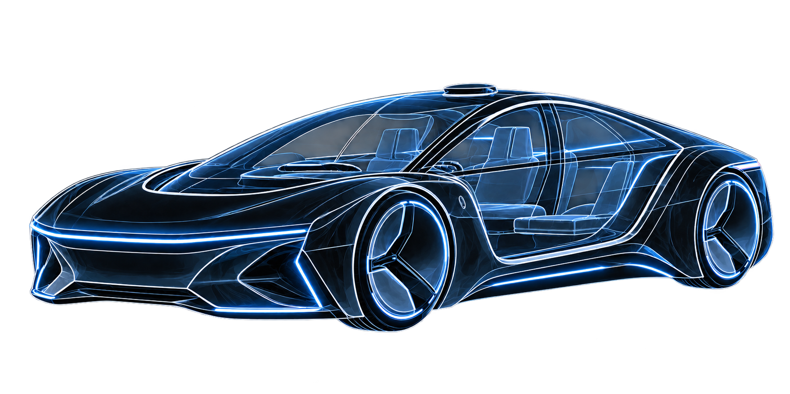
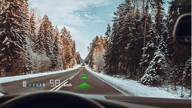
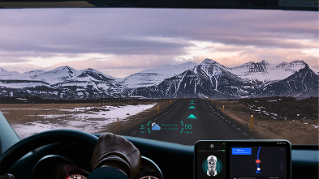
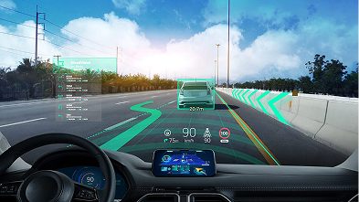
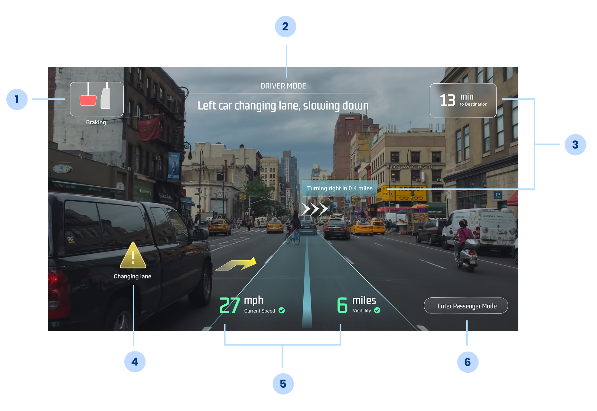
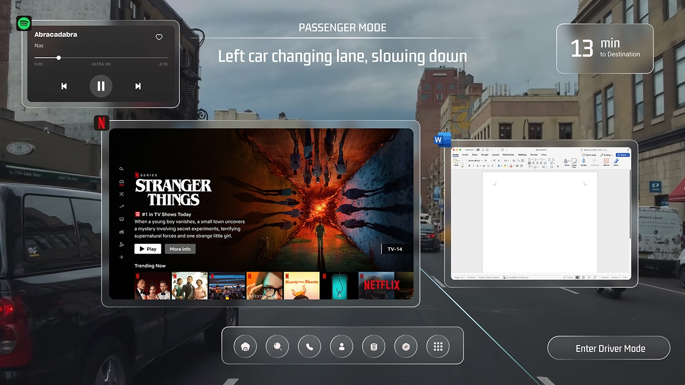
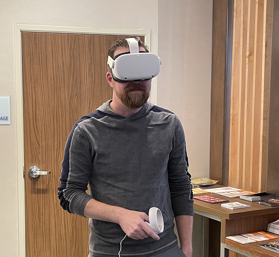
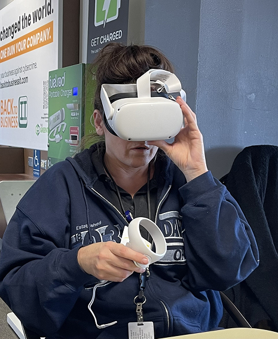
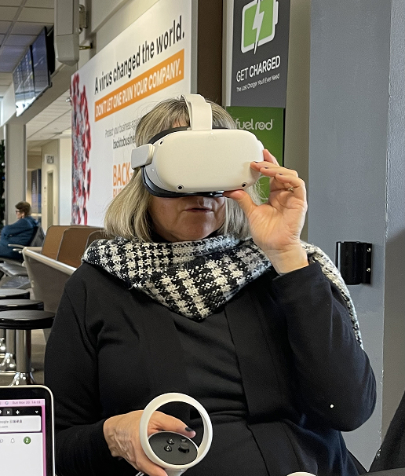
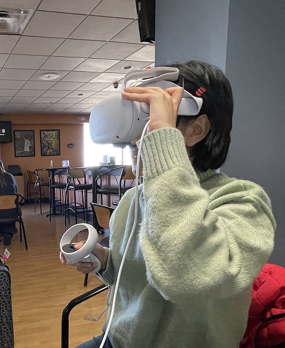

Reluctance to Completely Trust Automation
Users report feeling uncertainty about self-driving vehicles, especially towards higher automation levels.
Emerging Tech Prototype
How do we make it easier for users to transition into an era where vehicles are fully controlled by AI?
RoleDesigner & AR Developer
TimelineFeb 2024 - April 2024
FocusResearch, Design and prototyping

This is an HMI design challenge I completed at New York University, where my research centered around using designing for self-driving systems future vision. However, I still wanted to inform my visual decisions with user-centered methodology.
Design Question
How can we leverage HMI to improve the self-driving experience?
RESEARCH
This design question is very vague, so I first started dissecting it. There are so many self-driving experiences out there, so what is the specific scenario we’re tackling? I started with conducting user surveys and interviews, asking “What comes to mind when I talk about self-driving cars?”
Interestingly, people often think about full-automation vehicles, the more futuristic, sometimes even scifi perception of it. I’d like to highlight the interesting findings I received. Many users report feeling reluctant about adopting self-driving features due to safety concerns.
Users report feeling uncertainty about self-driving vehicles, especially towards higher automation levels.
Users feel they have to accept self-driving systems because it’s here to stay and increasingly becoming the trend
CONVERGE
With that research, I centered this project around a more North Star area: aiming for Level 5 full automation system because that’s an area that requires the most UX support and user advocacy. Imagine we have that for the future. As a UXD, my role now is to identify how we could facilitate the transition into a fully autonomous era so that users feel safe and more trust toward the system.

RESEARCH
Now, the next piece of the design question: There are so many HMI options. What is the specific medium we need? I researched into existing HMI methods, and that’s when I started looking at AR heads-up display (HUD). I noticed that many companies currently use AR HUD in GPS or ways to alert users of road conditions.



Constraint: It’s important to prioritize information to display so as not to cover objects on the road or distract drivers.
Advantage: When the car is fully autonomous then, while we still need to be careful of cognitive overload, we do have more flexibility on what to display
Constraint: The Optical viewing path of the HUD is different than the road, so drivers need to refocus their eyes when looking across the HUD and the road.
Advantage: This could be a potential problem for a human driver, but less a problem for a self-driving car passenger.
Many existing AR HUD uses colors to identify crucial information, but there should be a secondary explanation that accompanies it.
Defining the Scope
How can we use AR HUD to inform passengers of autonomous vehicle’s system status and intent so that users feel safer in the vehicle?
DEVELOP

From my earlier user interview, a user told me their experience sitting in a fully self-driving concept car. He finds himself constantly wanting to move his feet to step on the gas. So this pedal serves as that reassurance for the user, letting them know the system is performing the task and you can relax.
Large text on the top to always indicate what the vehicle is doing and simple reasons.
GPS that indicates where the vehicle is moving and Time to Destination.
Warning sign that highlights potential condition of other cars and obstacles that might interfere with this car’s path.
On the bottom, dashboard features to show if the vehicle’s moving at the right speed and has good visibility, using green to indicate that, but also a checkmark icon as a secondary explanation.
Users has control over how much they want to be involved. If they prefer to be more aware of the experience, they can stay in driver mode, but if they feel pretty safe, they can enter passenger mode and watch their show and do their work, which is the ultimate intention of a self-driving car.

TESTING
Now how do I bring this design to a group of audience? How do I test a future-vision project? I did not have much support at NYU in this area, so I had to come up with alternatives myself.
Virtual Reality!




I got a 360 driving video. To make sure the user doesn’t feel like it’s still driven by a human, I need to make sure the driver doesn’t show in the video, so it has to be taken from the top of the car instead. I edit my AR Design onto the video in post production. Some of the components like dashboard display are hard-coded onto the video, while other components, like warning signs need to be tracked to objects into the video.
OUTCOME
The main feedback I received was that it looked cool, was interesting to see, and was a great idea. Ultimately, users knew they were wearing a VR headset and were completely safe, so the experience could not fully capture how they would feel on the road. Still, it was a first step toward testing with the limited resources I had.
Time to destination always being there is helpful
I like the ability to switch between modes
Big speed display is very helpful
Even if I don’t have safety concerns, I still like to see the system at work.
Would need to try on the road to say if it’ll make me feel safer
Visual is high tech
Like the scifi look!
NEXT STEPS
Ultimately, I’m still designing for a North Star vision, so I need to pull it back and think about the present. How do we implement changes to the current reality, or 2–5 years into the future?
This project was my attempt at an HMI visual challenge that tackles a problem space I’m very passionate about, and informing my visual decisions with user-centered thinking, exploring how we could continue serving the users in a future that’s heavily directed by technology.